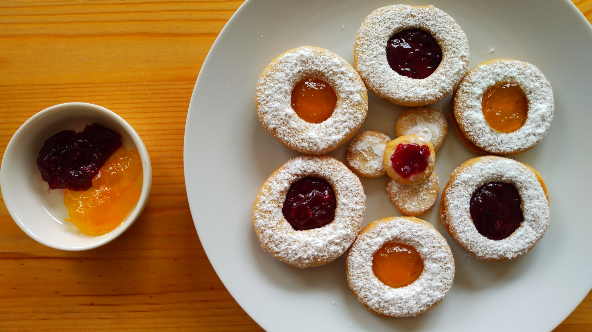

Galletas Linzer
- Preparación: 15 min y 1 h de enfriamiento
- Cocción: 8-10 min
- Porciones: 18 galletas
INGREDIENTES
- 1 ⅓ taza (160 g) de harina de trigo de todo uso
- ¾ taza (75 g) de harina de almendras
- ½ cucharadita de canela en polvo
- ¼ cucharadita de sal
- ¾ taza (170 g) de mantequilla sin sal a temperatura ambiente
- ½ taza (100 g) de azúcar granulada
- 1 yema de huevo grande
- 1 cucharadita de esencia pura de vainilla
- mermelada de frambuesa, naranja, o la que se tenga a mano
- azúcar glass para decorar
DESCRIPCIÓN
Estas galletas de origen austriaco son, desde mi punto de vista, las más bonitas y deliciosas. Se preparan fácilmente y con pocos ingredientes y no es necesario utilizar cortador especial de galletas. Quedan excelentes para hacer algún regalo, o para una reunión. La mermelada del relleno puede ser de cualquier sabor, pero personalmente recomiendo la de frambuesa, que además tiene un color rojo oscuro que las hace ver hermosas y elegantes.
INSTRUCCIONES
- En un recipiente hondo mezclar la harina de trigo, la harina de almendra, canela en polvo y sal. Reservar.
- En otro recipiente, batir a velocidad media la mantequilla junto con el azúcar hasta obtener una mezcla ligera y esponjosa. Agregar la yema de huevo y la esencia de vainilla y batir a velocidad baja hasta que la mezcla sea homogénea.
- Con la velocidad baja, agregar gradualmente la mezcla de harinas del paso 1 hasta que todo se combine. Volcar la masa en una superficie ligeramente enharinada y darle forma de disco grueso (2-3 cm de espesor). Envolver en plástico y refrigerar la masa por lo menos durante una hora, hasta que se vuelva firme.
- Precalentar el horno a 180 °C (350 °F) y preparar una bandeja amplia con papel para hornear.
- Sacar la masa del refrigerador y colocarla sobre una superficie enharinada. Aplanar con un rodillo hasta que la masa tenga 3-5 mm de espesor. Cortar con un vaso de aproximadamente 5 cm de diámetro 30 discos. Con un círculo menor, cortar un agujero en la mitad de los discos. Tendremos 15-18 discos completos y 15-18 discos con agujero (ver notas).
- Con ayuda de una espátula, colocar cuidadosamente los discos completos y los discos con hueco sobre la bandeja para hornear dejando espacio entre ellos. Ver notas.
- Hornear por 8-10 minutos o hasta que doren ligeramente. Dejar enfriar 5-10 minutos antes de retirar cuidadosamente de la bandeja. Dejar enfriar completamente en una rejilla. Hornear todas las galletas, si es necesario en varias rondas, dependiendo del tamaño del horno.
- Espolvorear azúcar glass sobre los discos con hueco. Verter media cucharadita de mermelada sobre los discos completos y luego colocar encima los discos con hueco, formando un sándwich. Presionar ligeramente para cerrar el sándwich, que en este paso queda listo para disfrutarse.
Notas
- Al ir cortando la masa, van saliendo sobrantes de masa, que se pueden refrigerar mientras seguimos trabajando. Después se pueden volver a aplanar para cortar más galletas.
- Es mejor tener varias bandejas preparadas para hacer el proceso más rápido, dado que las galletas no deben de tocarse entre si. Si no contamos con varias bandejas, se deben hornear por partes. Siempre existe la posibilidad de refrigerar la masa para más tarde seguir horneando.
- Receta original de Preppy Kitchen.